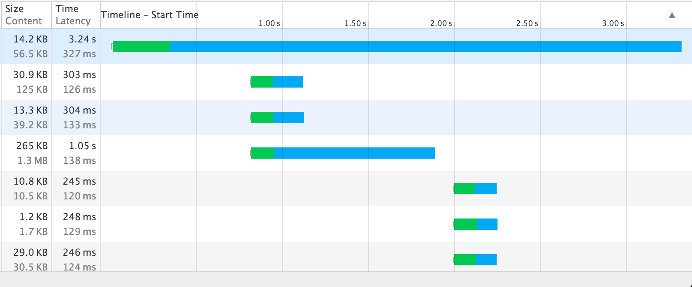
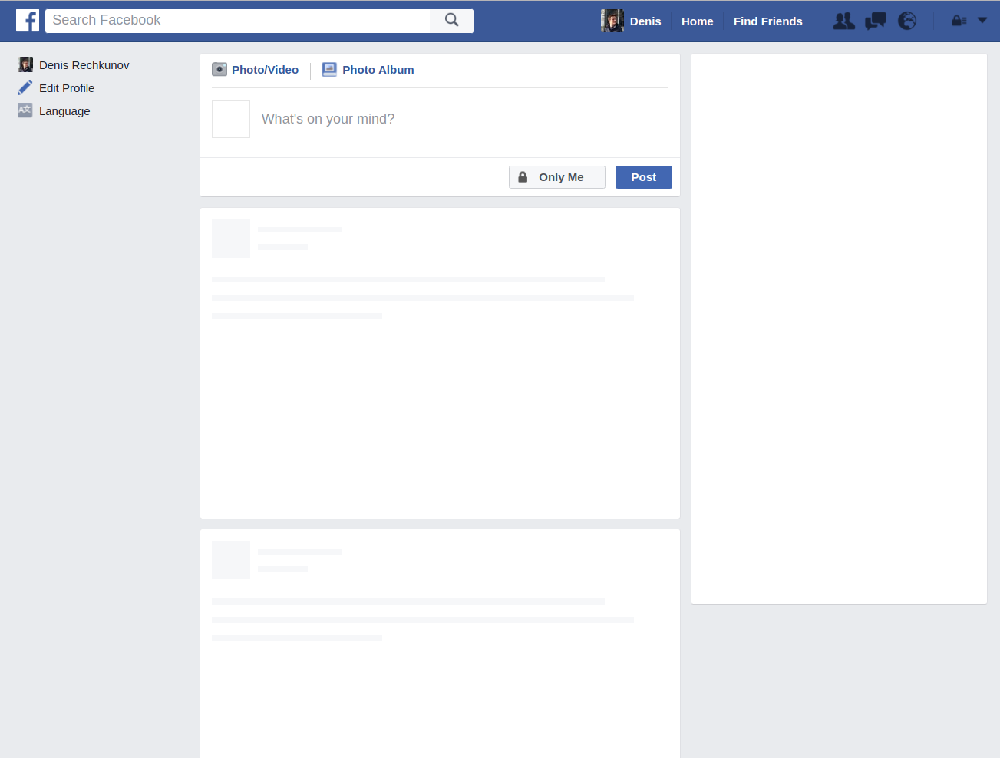

Some facts about me
- Worked as a .NET developer for 3 years
- Fell in love with Node.js
- Worked as a lead developer at Flamp (Yelp-like project in Russia)
- Now I live in Berlin and work for Amazon, building UI-components
- @rdner on GitHub
We're going to talk about
- Typical server-side rendering today
- Why it's not good for user experience
- How can we make it better
Server-side rendering
in general first
Majority of Node.js apps nowadays
(req, res, next) => {
const urlParts = url.parse(req.url, true);
getData(urlParts.query.id)
.then(data => template.render(data))
.then(html => res.end(html));
}
What's wrong with that?
- The entire HTML document is buffered in memory until it's ready
- We have to request data from a database or service to build a document
- It's a potentially slow operation and might last for ~500ms or more
- Let's imagine we have to do 10 requests and each depends on a previous one
- In this worst case, your users would not see anything at least for 5 seconds
What do your users think?
Some of them are just sad
Some of them are very angry
And some of them know that
progressive rendering exists
Instead of sending the
whole HTML buffer at once
We can send
HTML by multiple chunks
And this would be
progressive rendering
Never heard of it,
is it new?
Back in 1997
RFC 2068. HTTP/1.1
"The chunked encoding modifies the body of a message in order to
transfer it as a series of chunks, each with its own size indicator,
followed by an optional footer containing entity-header fields. This
allows dynamically-produced content to be transferred along with the
information necessary for the recipient to verify that it has
received the full message."
Back in 2005
"The Lost Art of Progressive HTML Rendering" by Jeff Atwood
"One thing I dislike about ASP.NET is that it renders the entire web page in memory before sending one single byte of that page to the browser"
"What's even more galling is that HTML was originally designed to render progressively as content is received"
Netscape 1.0
Netscape 1.0's early beta versions introduced the "progressive rendering" of pages and images, meaning that the page begins to appear and the text can be read even before all of the text and/or images have been completely downloaded.
If we edit the previous code
(req, res, next) => {
const urlParts = url.parse(req.url, true);
getData(urlParts.query.id)
.then(data => template.render(data))
.then(html => res.end(html));
}
(req, res, next) => {
const urlParts = url.parse(req.url, true);
getHeaderData(urlParts.query.id).then(headerData => {
res.write(template.render('header', headerData));
return getLeftMenuData(headerData.userId);
}).then(leftMenuData => {
res.write(template.render('leftMenu', leftMenuData));
return getMainBlockData(leftMenuData.currentSection);
})
.then(mainBlockData => /* etc. */)
.then(html => res.end());
}
And we can use
Node.js streams
(req, res, next) => {
const urlParts = url.parse(req.url, true);
const pageStream = new MyReadable(urlParts);
pageStream.pipe(res);
}
const Readable = require('stream').Readable;
class MyReadable extends Readable {
constructor(options) {
super(options);
}
_read(size) {
this.push('chunk of HTML');
this.push(null);
}
}
Why progressive rendering is better?
Advantages
- Less TTFB, a user sees the first part of the content immediately
- Browser works more efficiently loading resources in parallel
- It aligns with architecture based on microservices very well
- Even though your API/Database is slow, a user is thinking your app is fast
- This approach is more scalable than buffering the whole page
Browser loads resources in parallel

But it's not perfect
- We can set HTTP status code and headers only before the first byte
- This includes Cookie, redirects, not found pages, etc.
- That means we have to request main data first without pushing any HTML
- A user isn't able to interact with a page till it's fully loaded
- You have to split your page's data into small pieces (microservices)
What about client-side rendering?
Simple as that
- Split data into small queries
- Render as soon as you've got data
- Try to make your interface not "jumpy" using placeholders
Facebook uses placeholders

Is there a library/framework?
Summary
- Many data requests => it means you need progressive rendering
- The technology is very old and perfectly supported by browsers and Node.js
- Not that hard to implement, you can use Node.js streams
- Has some disadvantages you should keep in mind
- There are some existing solutions
Don't make your users wait
Make your apps render sooner
Thank you!
Denis Rechkunov (@rdner)
The Gifs were taken from Giphy